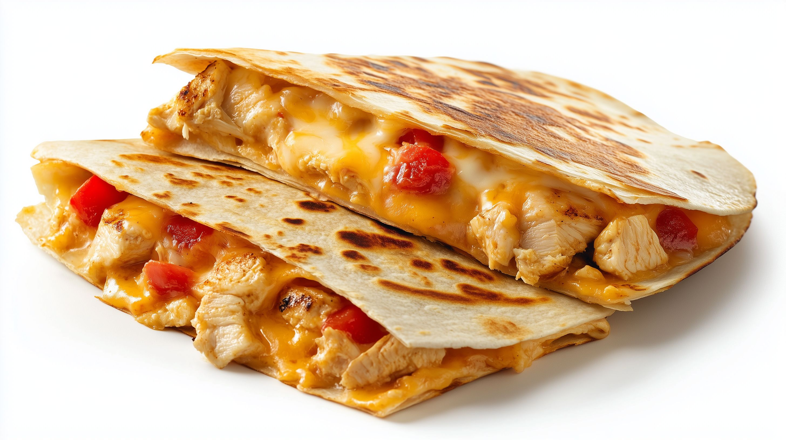

This chicken quesadilla recipe is great to make for parties. Zesty chicken, cooked peppers, and melted cheese are a delightful combination. Cut into wedges and serve with sour cream and salsa.
A quesadilla is a Mexican dish that consists of a tortilla filled with cheese (and often other ingredients, such as meat and veggies). It’s cooked on a griddle or stove.